G6 setup
EXTREMELY IMPORTANT: Make sure you remember this when using xDrip+ with a G6 sensor:
DO NOT STOP A SENSOR UNLESS YOU WANT TO REMOVE IT. Every time you will want to perform a Stop Sensor operation , ask yourself "Do I really want to do that?". On the other hand, "starting" an already started sensor won't harm unless you change the code.
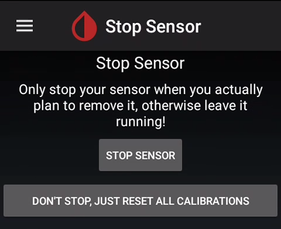
Enter your transmitter ID. Triple check it's correct.
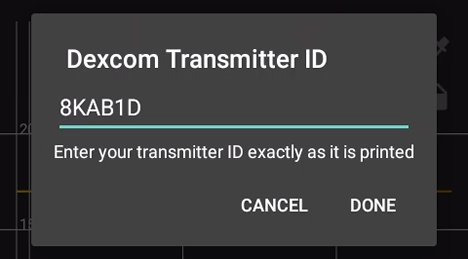
Warning: even if xDrip+ insists you should start the sensor, do NOT start it before you've setup everything correctly. Hit the back button to get rid of the message until instructed to start the sensor.
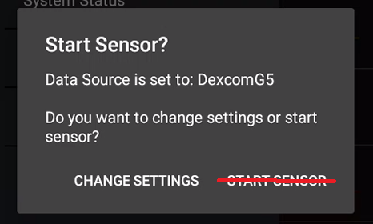
G6 settings
Menu / Settings / G5/G6 Debug Settings


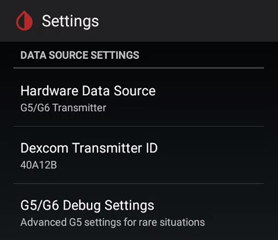
Make them exactly like this:
Native algorithm is mandatory for Firefly transmitters (above 81).
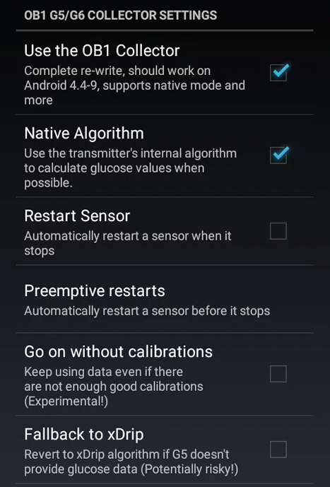
Enable Minimize scanning and Avoid scanning for Android 10 and above.
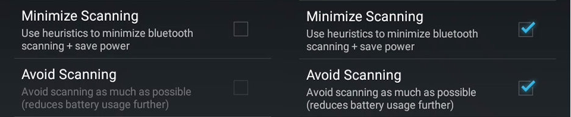
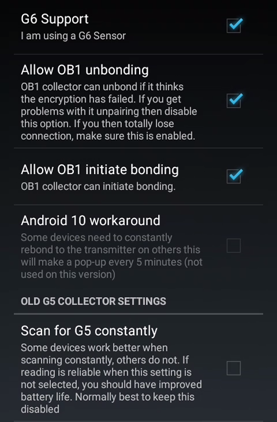
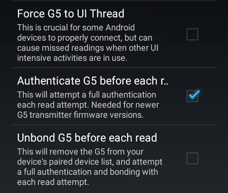
Menu / Settings / Less Common Settings / Bluetooth Settings

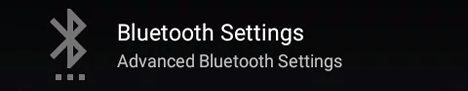
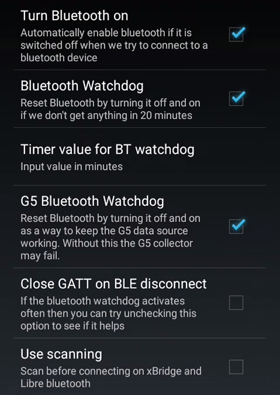
For Samsung phones disable Trust Auto-Connect!

For Android versions earlier than 8 disable Use Background Scans
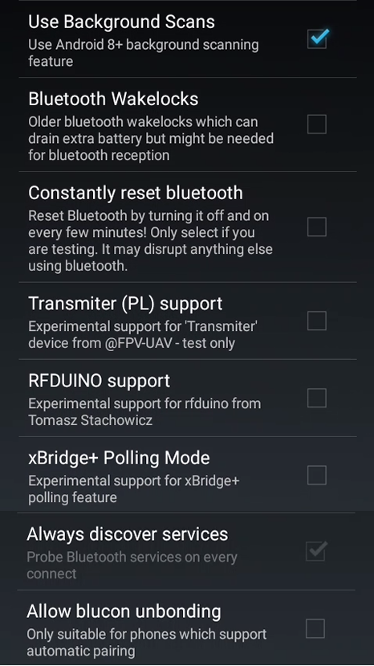
Restart your phone to make sure all parameters are being taken into account.
Continue to Start sensor.